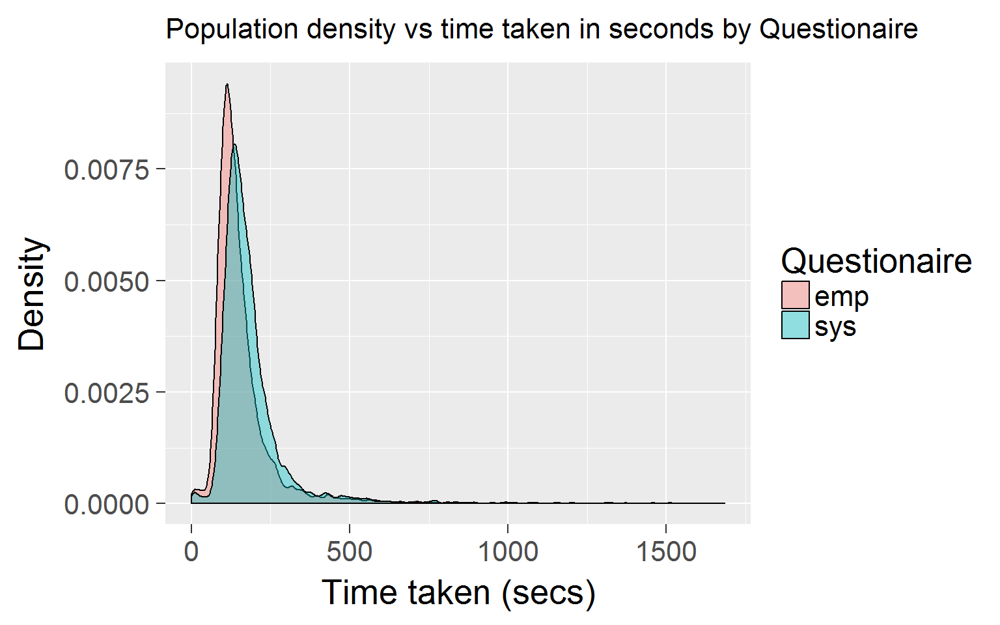

Coursework 1
Instructions
Download the RMarkdown file and edit it with your answers, replacing any NULL values with your solution code and adding any additional code that you need. You can add or modify code in an existing block, but please DO NOT add or remove any code blocks, and DO NOT change any of the code block names. Once completed, submit your RMarkdown file using the link in Moodle.
Data
Data in the files (https://rgup.gitlab.io/research_cycle/data/empathizing.csv) and (https://rgup.gitlab.io/research_cycle/data/systemizing.csv) are responses to the short forms of the Empathizing and Systemizing Quotient short forms.
The variable user_id is the participant’s unique ID, while the variable id is a unique ID for that questionnaire completion. Some participants completed both questionnaires on the same day, others only completed one, others completed the questionnaires multiple times. The columns starttime and endtime contain the timestamps for when each questionnaire was started and completed.
Scoring: An individual scores two points if they strongly display a systemizing/empathizing response, and one point if they slightly display a systemizing/empathizing response (i.e., each forward (F) item scored 2, 1, 0, 0; each reversed (R) item scored 0, 0, 1, 2).
In the data files, responses were coded as follows:
- 1 = Strongly agree
- 2 = Slightly agree
- 3 = Slightly disagree
- 4 = Strongly disagree
Empathizing (EQ-Short)
q2663, F, I can easily tell if someone else wants to enter a conversation.
q2664, F, I really enjoy caring for other people.
q2665, R, I find it hard to know what to do in a social situation.
q2666, R, I often find it difficult to judge if something is rude or polite.
q2667, R, In a conversation, I tend to focus on my own thoughts rather than on what my listener might be thinking.
q2668, F, I can pick up quickly if someone says one thing but means another.
q2669, R, It is hard for me to see why some things upset people so much.
q2670, F, I find it easy to put myself in somebody else’s shoes.
q2671, F, I am good at predicting how someone will feel.
q2672, F, I am quick to spot when someone in a group is feeling awkward or uncomfortable.
q2673, R, I can’t always see why someone should have felt offended by a remark.
q2674, F, I don’t tend to find social situations confusing.
q2675, F, Other people tell me I am good at understanding how they are feeling and what they are thinking.
q2676, F, I can easily tell if someone else is interested or bored with what I am saying.
q2677, F, Friends usually talk to me about their problems as they say that I am very understanding.
q2678, F, I can sense if I am intruding, even if the other person doesn’t tell me.
q2679, R, Other people often say that I am insensitive, though I don’t always see why.
q2680, F, I can tune into how someone else feels rapidly and intuitively.
q2681, F, I can easily work out what another person might want to talk about.
q2682, F, I can tell if someone is masking their true emotion.
q2683, F, I am good at predicting what someone will do.
q2684, F, I tend to get emotionally involved with a friend’s problems.
Systemizing (SQ-Short)
q2616, F, If I were buying a car, I would want to obtain specific information about its engine.
q2617, F, If there was a problem with the electrical wiring in my home, I’d be able to fix it myself.
q2618, R, I rarely read articles or web pages about new technology.
q2619, R, I do not enjoy games that involve a high degree of strategy.
q2620, F, I am fascinated by how machines work.
q2621, F, In math, I am intrigued by the rules and patterns governing numbers.
q2622, R, I find it difficult to understand instruction manuals for putting appliances together.
q2623, F, If I were buying a computer, I would want to know exact details about its hard disc drive capacity and processor speed.
q2624, R, I find it difficult to read and understand maps.
q2625, R, When I look at a piece of furniture, I do not notice the details of how it was constructed.
q2626, R, I find it difficult to learn my way around a new city.
q2627, R, I do not tend to watch science documentaries on television or read articles about science and nature.
q2628, F, If I were buying a stereo, I would want to know about its precise technical features.
q2629, F, I find it easy to grasp exactly how odds work in betting.
q2630, R, I am not very meticulous when I carry out D.I.Y.
q2631, F, When I look at a building, I am curious about the precise way it was constructed.
q2632, R, I find it difficult to understand information the bank sends me on different investment and saving systems.
q2633, F, When travelling by train, I often wonder exactly how the rail networks are coordinated.
q2634, R, If I were buying a camera, I would not look carefully into the quality of the lens.
q2635, R, When I hear the weather forecast, I am not very interested in the meteorological patterns.
q2636, F, When I look a mountain, I think about how precisely it was formed.
q2637, F, I can easily visualize how the motorways in my region link up.
q2638, R, When I’m in a plane, I do not think about the aerodynamics.
q2639, F, I am interested in knowing the path a river takes from its source to the sea.
q2640, R, I am not interested in understanding how wireless communication works.
Assignment
Answer the following questions by editing the code block below each question.
Note: please enter the code that generates the correct answer; don’t simply type in the numbers. The code should give the right answers even if the source data files change (new rows of values are added or subtracted).
In this RMarkdown file:
- DO NOT install/update/remove any packages
- DO NOT set your working directory
- DO NOT use the
View()function - DO NOT reference any help functions or package vignettes.
You will be penalized if your file includes any of the above features or any other code that is unnecessary for answering the question, or that produces undesireable side effects.
Setup block. Load any add-on packages you need here.
library(tidyverse)Loading and inspecting files
Load in the two CSV files directly from the web (use the URLs above). How many times were the empathizing and systemizing questionnaires completed? Save these as the variables:
emp_total_nsys_total_n
## TODO: read the data
emp_total_n <- read_csv("https://rgup.gitlab.io/research_cycle/data/empathizing.csv")
sys_total_n <- read_csv("https://rgup.gitlab.io/research_cycle/data/systemizing.csv")Calculating durations
How long did it take people to complete each questionnaire?
- Create the following variables:
mean_emp= mean duration (in seconds) for empathizing questionnaire (before exclusions)sd_emp= SD of duration (in seconds) for empathizing questionnaire (before exclusions)mean_sys= mean duration (in seconds) for systemizing questionnaire (before exclusions)sd_sys= SD of duration (in seconds) for systemizing questionnaire (before exclusions)
## add any additional code you need
#emp_total_n$takentime <- with(emp_total_n, difftime(endtime, starttime, units="secs")) is better because shorter than mutate(emp_total_n, takentime = difftime(endtime,starttime,units="secs")), but u said use tidyverse
emp_total_n2 <- emp_total_n %>% mutate(takentime = difftime(endtime,starttime,units="secs"))
sys_total_n2 <- sys_total_n %>% mutate(takentime = difftime(endtime,starttime,units="secs"))
mean_emp <- emp_total_n2 %>% summarise(mean(takentime))
sd_emp <- emp_total_n2 %>% summarise(sd(takentime))
mean_sys <- sys_total_n2 %>% summarise(mean(takentime))
sd_sys <- sys_total_n2 %>% summarise(sd(takentime))
#some other smooth basic alternatives
#mean_sys <- mean(with(sys_total_n,difftime(endtime,starttime,units="secs")))
#sd_sys <- sd(with(sys_total_n,difftime(endtime,starttime,units="secs")))- Graph the distributions for each questionnaire after excluding times that are more than 3 SDs above the mean for each questionnaire.
emp_total_n3 <- emp_total_n2 %>%
select(user_id, takentime) %>%
filter(takentime < (mean_emp + 3*sd_emp + 1)) %>%
mutate(eors = "emp")
sys_total_n3 <- sys_total_n2 %>%
select(user_id, takentime) %>%
filter(takentime < (mean_sys + 3*sd_sys + 1)) %>%
mutate(eors = "sys")
union(emp_total_n3, sys_total_n3) %>%
ggplot(aes(takentime, fill = eors)) +
geom_density(alpha = 0.4) +
labs(title ="Population density vs time taken in seconds by Questionaire", x = "Time taken (secs)", y = "Density") +
scale_fill_discrete(name = "Questionaire") +
theme_grey(base_size=20) +
theme(plot.title = element_text(size=16))
## TODO: create a graphQuestionnaire completion
- How many people completed both questionnaires for the first time on the same day? Save this number as
first_time_n.
Remember to check for people who completed a questionnaire more than once.
## add any additional code you need
emp4 <- emp_total_n2 %>%
mutate(date = as.Date(endtime, format="%a %b %d %H:%M:%S EST %Y")) %>%
select(user_id, date, sex, age)
sys4 <- sys_total_n2 %>%
mutate(date = as.Date(endtime, format="%a %b %d %H:%M:%S EST %Y")) %>%
select(user_id, date)
tot4 <- sys4 %>%
inner_join(emp4, "user_id") %>%
filter(date.x == date.y) %>%
distinct(user_id, .keep_all = TRUE)
first_time_n <- tot4 %>%
count()Respondent demographics
- Create a table of demographic information by sex with the columns
sex,n,mean age,sd age, andnumber missing age, only for people who completed both questionnaires for the first time on the same day (i.e., use the data table you created for question 4). Save the table asdemog_table.
## add any additional code you need
m_f <- tot4 %>%
group_by(sex) %>%
count()
na_age <- tot4 %>%
filter(is.na(age)) %>%
group_by(sex) %>%
count()
m_age <- tot4 %>%
group_by(sex) %>%
summarise('mean age' = mean(age, na.rm = TRUE),sd = sd(age, na.rm = TRUE))
demog_table <- inner_join(m_f, m_age) %>%
inner_join(na_age, "sex") %>%
ungroup() %>%
rename("n" = n.x, "number missing age" = n.y)- What is wrong with the SD? Address it by changing implausible ages to
NAand re-calcuating the table above, saving it asdemog_table_fixed.
## add any additional code you need
m_age_fix <- tot4 %>%
mutate(age = replace(age, which(age < 18 | age > 100), NA)) %>%
group_by(sex) %>%
summarise('mean age' = mean(age, na.rm = TRUE),sd = sd(age, na.rm = TRUE))
demog_table_fixed <- inner_join(m_f, m_age_fix) %>%
inner_join(na_age, "sex") %>%
ungroup() %>%
rename("n" = n.x, "number missing age" = n.y)Exclusions
If someone takes less than 30 seconds to fill out the questionnaire or gives the same reponse for every question, we can assume they aren’t taking the study seriously.
- Filter out non-serious responders. Store the resulting data in the variable named
emp_sys_cleaned. You will use this as the source table in later problems.
#remove monotone answers
emp7 <- tot4 %>%
inner_join(emp_total_n) %>%
gather(qn,r, q2663:q2684) %>%
group_by(user_id,r) %>%
summarise(count = n()) %>%
na.omit() %>%
group_by(user_id) %>%
summarise(count = n()) %>%
filter(count > 1) %>% select(user_id)
sys7 <- tot4 %>%
inner_join(sys_total_n) %>%
gather(qn,r, q2616:q2640) %>%
group_by(user_id,r) %>%
summarise(count = n()) %>%
na.omit() %>%
group_by(user_id) %>%
summarise(count = n()) %>%
filter(count > 1) %>%
select(user_id)
#remove 30 sec answers
tot7 <- tot4 %>%
inner_join(emp_total_n2, "user_id") %>%
inner_join(sys_total_n2, "user_id") %>%
distinct(user_id, .keep_all = TRUE) %>%
filter(takentime.x >= 30, takentime.y >= 30) %>%
select(user_id)
#join all together (monotone removed, less than 30 sec)
emp_sys_cleaned <- inner_join(sys7, emp7) %>%
inner_join(tot7)- Create the following variables:
excluded_short= How many people took less than 30 seconds on at least one questionnaire?excluded_one= How many people gave the same response to each question in at least one questionnaire?excluded_total= How many people are you excluding in total?
tot8 <- inner_join(sys7, emp7) %>%
select(user_id)
excluded_short <- tot4 %>%
anti_join(tot7) %>%
count()
excluded_one <- tot4 %>%
anti_join(tot8) %>%
count()
excluded_total <- tot4 %>%
anti_join(emp_sys_cleaned) %>%
count()- Write up your exclusion criteria and numbers of participants excluded as if for the methods section of a paper. Use inline code to generate any numbers used in your description; don’t just type them.
----- do not delete
We excluded from the analyses participants who took less than 30 seconds to respond to either of the questionaires 28 and those who only gave one type of response on either of the questionaires 21. As some of these overlapped, 33 were excluded in total. This left 3773 participants.
----- do not delete
Create EQ and SQ scores
Calculate the EQ and SQ scores from the questionnaire responses.
Remember that forward coded (F) questions are coded:
- strongly agree = 2
- slightly agree = 1
- slightly disagree = 0
- strongly disagree = 0
while reverse-coded (R) questions are coded:
- strongly agree = 0
- slightly agree = 0
- slightly disagree = 1
- strongly disagree = 2
- Create a table of mean EQ and SQ by sex and save it as
EQ_SQ_scores. Include the columnssex,n,mean_EQ,mean_SQ,missing_EQ, andmissing_SQ(how many people have a missing score).
## add any additional code you need
qn = sys_total_n %>%
gather(qn,r, q2616:q2640) %>%
group_by(qn) %>%
summarise(count = n()) %>%
select(qn)
direction = c('F', 'F', 'R', 'R', 'F', 'F', 'R', 'F', 'R', 'R', 'R', 'R', 'F', 'F', 'R', 'F', 'R', 'F', 'R', 'R', 'F', 'F', 'R', 'F', 'R')
stable = data.frame(qn, direction)
qn = emp_total_n %>%
gather(qn,r, q2663:q2684) %>%
group_by(qn) %>%
summarise(count = n()) %>%
select(qn)
direction = c('F', 'F', 'R', 'R', 'R', 'F', 'R', 'F', 'F', 'F', 'R', 'F', 'F', 'F', 'F', 'F', 'R', 'F', 'F', 'F', 'F', 'F')
etable = data.frame(qn, direction)
psex <- emp_sys_cleaned %>%
left_join(emp_total_n) %>%
distinct(user_id, .keep_all = TRUE) %>%
select(user_id, sex)
SQm <- emp_sys_cleaned %>%
inner_join(sys_total_n2) %>%
gather(qn,r, q2616:q2640) %>%
inner_join(stable) %>%
mutate(r =ifelse(direction == "F", r, 5-r)) %>%
mutate(r =ifelse(r == (1|2), 0, r-2)) %>%
group_by(user_id) %>%
summarize(score = (sum(r))) %>%
inner_join(psex) %>%
group_by(sex) %>%
summarise(mean_SQ = mean(score, na.rm=TRUE),missing_SQ =sum(is.na(score)))
EQm <- emp_sys_cleaned %>%
inner_join(emp_total_n2) %>%
gather(qn,r, q2663:q2684) %>%
inner_join(etable) %>%
mutate(r =ifelse(direction == "F", r, 5-r)) %>%
mutate(r =ifelse(r == (1|2), 0, r-2)) %>%
group_by(user_id) %>%
summarize(score = (sum(r))) %>%
inner_join(psex) %>%
group_by(sex) %>%
summarise(mean_EQ = mean(score, na.rm=TRUE),missing_EQ =sum(is.na(score)))
EQ_SQ_scores <- EQm %>%
inner_join(SQm)- Write code to re-create the following graph of the EQ and SQ score distributions for men and women.

sscores <- emp_sys_cleaned %>%
inner_join(sys_total_n2) %>%
distinct(user_id, .keep_all = TRUE) %>%
gather(qn,r, q2616:q2640) %>% inner_join(stable) %>%
mutate(r =ifelse(direction == "F", r, 5-r)) %>%
mutate(r =ifelse(r == (1|2), 0, r-2)) %>%
group_by(user_id) %>% summarize(score = (sum(r))) %>%
mutate(eors = 'SQ Scores')
escores <- emp_sys_cleaned %>%
inner_join(emp_total_n2) %>%
distinct(user_id, .keep_all = TRUE) %>%
gather(qn,r, q2663:q2684) %>%
inner_join(etable) %>%
mutate(r =ifelse(direction == "F", r, 5-r)) %>%
mutate(r =ifelse(r == (1|2), 0, r-2)) %>%
group_by(user_id) %>% summarize(score = (sum(r))) %>%
mutate(eors = 'EQ Scores')
tot11 <- sscores %>%
union(escores) %>%
inner_join(psex) %>%
filter(!is.na(sex))
dodge <- position_dodge(width = 1.1)
tot11 %>%
ggplot(aes(eors, score, fill = sex)) +
geom_violin(
draw_quantiles = c(0.25,.5,.75),
colour = "black",
size = 0.6,
width = 1.1,
alpha = 0.52,
position = dodge ) +
geom_boxplot(
colour = "black",
width = 0.15,
position = dodge
) +
labs(title ="EQ and SQ for Women and Men", x = "", y = "Score (0-44 for EQ; 0-50 for SQ") +
scale_fill_manual(name = "Participant Sex",values=c("darkorange", "darkgreen")) +
theme_gray(base_size=17)  I know it looks a bit off, but it is interesting to see how the quantiles change through the exclusion of the outliers. Why are your curves more smooth?
I know it looks a bit off, but it is interesting to see how the quantiles change through the exclusion of the outliers. Why are your curves more smooth?